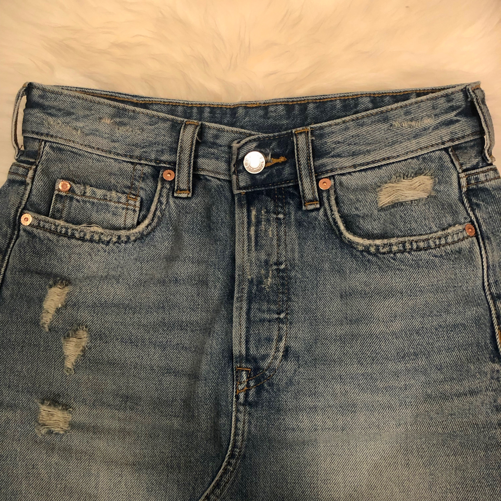

元デニムストアスタッフの筆者が研究を重ねて見つけた、ストリートシルエットなおすすめデニムブランドを紹介していきます。
〜プチプラ編〜
デニムをカッコ良く着こなすためには「高見え感」が重要です。
プチプラデニムは、ボタンや風合い、ダメージ部分などに値段が出やすいのでよく選ぶことが大切。
探せば良いデニムがたくさんいますよ。
ー H&M ー
H&Mは、綿100%のデニムが強いです。
シンプルなデザインが多く、デニムスカートやデニムショーツなど、質が良くみえるものも密かにいます。
全体的に風合いも良い感じです。
しかし、ストレッチの効いたデニムは生地が薄く、プチプラを感じます。
パッチは控えめなデザインです。
プチプラなのにダメージの加工や、ウォッシュ加工がビンテージっぽいです。
縫製もしっかりしています。

H&Mは綿100%のデニムを！
ー ZARA ー

ZARAはスキニー一択だと個人的に思います。
最近ではカットオフされたデザインのよいスキニーも出ています。
締め付け感も少なく、普段使いにもってこいです。
スキニー以外のデニムは、シルエットや風合い、腰回りのデザインに少々プチプラ価格を感じます。
パッチの主張は強めです。ダメージ部分のヒゲの色は白です。
ZARAデニムのステッチは黄色です。コインポケットのあたりなど、縫製の粗が少し気になりますが、低価格で提供してくれるzara様には感謝感謝です。
スキニーのZARAね!
〜H&M/ZARA 比べてみました〜
左→ZARA 右→H&Mです。
どちらも同じデニムスカートです。
H&Mのほうがダメージの横線が細かく入っていますね。ヒゲの色もくすんだ色で、H&Mのデニムのほうがより本物っぽいデニムの色味に近いかと思います。
個体差や、型によっても風合いが違うのよね
ー MOUSSY ー
細見えデニム豊富。
特にブーツカットデニムが素晴らしい。
ブーツカットやフレアってなかなかシルエットが難しいのに、このシルエットよ…。
さすが細見えデニムブランド、マウジー。かなりのスタイルアップ。
デニムの風合いや、ダメージ加工のクオリティはまあまあ。
スタイルアップのMOUSSY！
〜高級ブランド編〜
デニムの質は値段に比例するので、高級ブランドとなるとまずクオリティは保証されます。あとはシルエットやデザインの好みです。
高級ブランドのデニムはこだわりを持って作られている分、フィッティングが自分の骨格に合う・合わないがはっきりしています。
ー DIESEL ー
DIESELのデニムは、【クオリティ・細見え・動きやすさ・デザイン・値段】バランスが非常に優れていると思います。
Babhila というシリーズがおすすめです。店員さんもゴリ押しのデニムでした。
全体的にバランスが良いのよね！
ー RE/DONE ー

はい、神デニム。これぞ本物感。味のあるデニム。個人的にゴリ押しです。
めちゃめちゃ語りたいのですが長くなりそうなので別記事で改めて紹介します。
質感も本物、重量感もあり、何よりシルエットが神…。
腰回りや太もも周りが固めなのではき心地は正直あまりよくありませんが、それもデニムの楽しみだと思って、
馴染んでくるまで待ちます。
人気商品のため都内でも在庫が少なくなってきているようです。
ハリウッドセレブたちも溺愛するわけよね。。。
まとめ
以上、おすすめストリートデニムブランドでした。
デニムって本当に奥が深いですよね。質感からシルエットまで、ブランドによってすべて性格が違います。
デニムは出会い。運命の一本に出会いましょう！